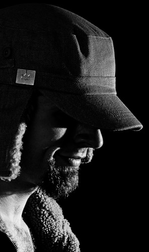

|  | About the PhotographerI'm Robert, and exolucere.ca is my online portfolio. I discovered my passion for photography in 2003, and since then it has become an outlet for my creative energy. I graduated from the photography program at the Northern Alberta Institute of Technology in 2008. My goal is to reveal the unique beauty of the hidden and mundane places ignored in everyday life — to discover and photograph overlooked areas in your city. Through photographs, I hope to enhance your interest in the world around you. What does "exolucere" mean? This faux-latin word is intended to mean "external light," referring to the fact that photographs are literally made up of light. NEW! All images on this site are available for purchase through Fotomoto. These come unmounted and unframed, on Kodak Endura Metallic paper. They are printed uncropped from what you see on this site, so you won't miss a single detail. For pricing, simply visit the gallery containing the photo you want to print, click on "buy a print," and then choose the photo from the menu. You will then be presented with your choice of sizes, and corresponding prices. |
Friends |